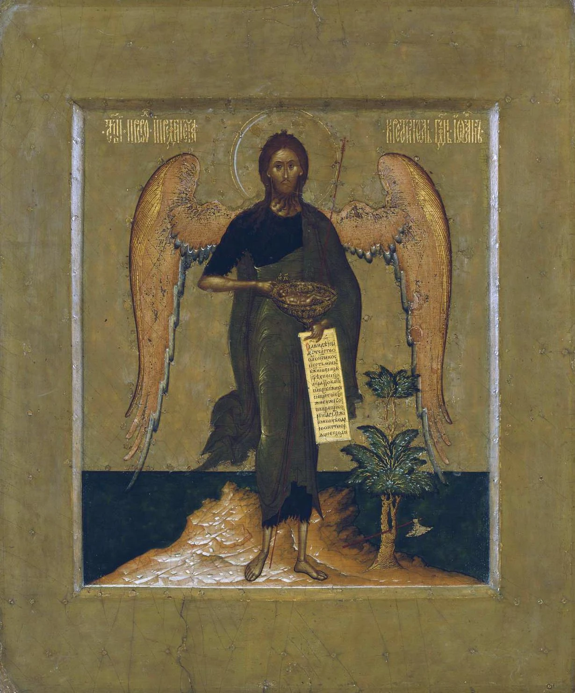

아직 펼치지 않은 카드
아직 펼치지 않은 카드
1월 7일의 성탄과 이름의 날 · 3이름 축일(명명일)그리스에서는 5월 21일이 되면 온 나라가 들썩여요. 콘스탄티노스와 엘레니라는 이름을 가진 사람들에게 무슨 날일까요?생일보다 더 크게 축하하는 ‘이름의 날’이 있대!
1월 7일 · 5월 21일그리스 · 정교회 달력과 이름
이름 축일(명명일)
그리스에서는 5월 21일이 되면 콘스탄티노스와 엘레니라는 사람들이 한꺼번에 축하를 받아요. 교회 달력에서 그날이 콘스탄티누스와 헬레나를 기억하는 날이기 때문이에요. 400년 전 러시아에서 그린 달력 이콘에서, 그날의 이름들을 직접 찾아보세요.
그리스에서는 생일 말고 ‘이름의 날’도 축하한대. 교회 달력에 날마다 성인의 이름이 적혀 있거든. 옛날 그림 달력에서 이름들을 같이 찾아볼까?
검수 전 시안이에요(기준서 1판). 이름 축일 풍습은 그리스 신문과 크레타 안내 누리집을, 이콘은 소장 미술관의 설명을 따랐어요. 자료마다 다른 점은 따로 적었어요. 상상은 ‘눈 감고 상상해 보기’에만 썼어요.
시안 확인용카드 단계 미리 보기
1
1월 7일의 야니스
그리스에서 1월 7일은 야니스(요안니스)와 야나(요안나)의 이름 축일이에요. 이날 교회는 세례 요한을 기억해요.
정교회는 큰 축일 다음 날, 그 일에 함께한 성인을 기억해요. 1월 6일은 예수께서 요한에게 세례받으신 일을 기억하는 ‘신현 축일’(하나님이 드러나신 날)이에요. 그래서 다음 날에는 세례를 준 요한을 기억해요.

위 이콘은 1620년대에 러시아의 이콘 화가 프로코피 치린이 그린 세례 요한이에요. 등에 천사 같은 날개가 있어요.
복음서는 ‘내가 내 사자(심부름꾼)를 앞서 보낸다’는 옛 예언을 요한에게 이어서 읽어요. 옛 러시아 이콘은 이 말씀을 따라 요한을 날개 단 ‘광야의 천사’로도 그렸어요.
요한이 든 금빛 그릇에는 아기 그리스도가 누워 있어요. 그릇 위의 ‘ІС ХС’는 ‘예수 그리스도’를 줄인 글자예요. 오른쪽 아래 나무뿌리 옆에는 도끼가 놓여 있어요.
그리스에서는 1월 7일이 ‘야니스’라는 이름을 가진 사람들의 날이야. 세례 요한을 기억하는 날이거든.
물어보기요한의 등에 무엇이 달려 있어?
2
달력 속 이름 찾기
정교회 달력에는 날마다 기억하는 성인이 있어요. 아래 이콘은 그 달력을 그림으로 옮긴 ‘미네야’ 이콘이에요. 한 달 동안 기억하는 성인과 축일을 날짜 차례대로 그렸어요.
17세기 초 러시아 가운데 지방에서 그린 5월 달력이에요. 줄마다 왼쪽에서 오른쪽으로 날짜가 흘러요. 그림 위 숫자를 눌러 5월의 이름들을 찾아보세요.
그림 위 숫자를 하나씩 눌러 5월 달력 속 이름들을 찾아보세요.

「미네야 5월」 이콘, 17세기 첫 25년, 러시아 가운데 지방. 모스크바 신학 아카데미 ‘교회 고고학 진열실’(그리스도교 미술관) 소장 · 그림: 이름 모를 러시아 이콘 화가 · 퍼블릭 도메인 · 위키미디어 공용
그림 위의 숫자나 아래 번호를 눌러 보세요.
5월 달력의 다섯 곳을 다 찾았어요. 이 달력 속 성인마다, 같은 이름을 가진 누군가에게는 이름 축일이에요.
그리스에서 이름 축일은, 그 사람이 가진 이름의 성인을 교회가 기억하는 날이에요. 그래서 이 달력 속 성인 한 사람 한 사람이, 같은 이름을 가진 누군가의 축일이 돼요.
이날 집주인은 문을 열어 두고, 친구와 친척은 초대받지 않아도 꽃이나 단것을 들고 들러요. 멀리 사는 사람은 전화나 문자로 ‘흐로니아 폴라(여러 해)!’를 보내요.
그리스 친구의 이름 축일을 달력에서 찾아볼까요? 친구 이름을 골라 보세요.
이 그림은 5월 달력이야. 날마다 기억하는 성인이 날짜 차례대로 그려져 있어.
물어보기왕관을 쓴 두 사람은 어디에 있을까?
눈 감고 상상해 보기
5월 21일 아침, 문이 활짝 열린 집이에요. 부엌에서 커피 향이 퍼지고, 식탁에는 단것이 담긴 접시가 놓여 있어요. 전화벨이 몇 번이나 울려요. 초인종이 울리고, 꽃을 든 이웃이 웃으며 들어와요. “흐로니아 폴라!” 오늘 이 집의 엘레니는, 같은 이름을 가진 수많은 이웃과 함께 축하를 받아요.
눈을 감아 봐. 문이 활짝 열린 집이야. 맛있는 냄새가 나고, 꽃을 든 친구가 “흐로니아 폴라!” 하고 들어와.
나의 자리
내 이름에는 어떤 뜻이나 이야기가 담겨 있나요? 그 이름을 지어 준 사람은 무엇을 바랐을까요?
내 이름은 무슨 뜻이야? 누가 지어 줬어?
마음에 닿는 한 줄을 고르거나 직접 써 보세요. 한 줄을 남기면 이 자리의 도장이 찍혀요. 이 기기에만 저장돼요.
더 깊이
궁금한 칸만 펼쳐 읽어도 괜찮아요.
알고 보면
글자로 쓴 숫자 이콘 속 붉은 글자 ‘А’, ‘КА’, ‘КД’, ‘КЕ’는 날짜예요. 교회 슬라브 말에서는 글자로 숫자를 적어요. А는 1, Д는 4, Е는 5, К는 20이라서 КА는 21, КД는 24, КЕ는 25예요.
옛 달력의 날짜 이 이콘의 날짜는 옛 방식(율리우스력)을 따라요. 그래서 러시아처럼 옛 달력을 쓰는 교회에서는 콘스탄티누스와 헬레나의 날이 나라 달력으로 6월 3일이고, 세례 요한을 기억하는 1월 7일도 나라 달력으로는 1월 20일이에요. 그리스 교회는 고친 달력을 써서 나라 달력 날짜 그대로 지켜요.
흔한 이름, 큰 축일 2025년 그리스 신문 To Vima에 따르면, 그리스 남자의 6.0%가 콘스탄티노스, 여자의 5.2%가 엘레니라는 이름이에요.
친구가 부르면 크레타 안내 누리집은, 이름 축일을 맞은 친구가 타베르나(그리스의 동네 식당)로 초대하기도 한다고 소개해요.
기록마다 다른 점
찾아가기 전에 물을까 To Vima는 친구와 친척이 초대 없이 들른다고 쓰고, 크레타 안내 누리집은 찾아가도 되는지 먼저 물어보라고 해요. 두 글의 설명이 달라요.
세례 요한을 만나는 말씀
세례 요한 이야기는 복음서 곳곳에 나와요. 말씀은 뜻만 옮기고, 본문은 대한성서공회 개역개정으로 이어 드려요.
마태복음 3장 요한이 광야에서 회개를 외치고, 요단강에서 예수께 세례를 줘요. 10절에는 ‘도끼가 이미 나무뿌리에 놓였다’는 요한의 말이 나와요.
마가복음 1장 2~8절 ‘내가 내 사자를 네 앞에 보낸다’는 예언과 함께 요한이 등장해요. 날개 단 요한 이콘의 바탕이 된 말씀이에요.
요한복음 1장 29절 요한이 예수를 가리켜 ‘하나님의 어린 양’이라고 말해요.
더 찾아보기
확인한 날 · 2026년 11월 18일 · 바뀌기 쉬운 정보라 정기적으로 다시 확인해요
그리스의 이름 축일 달력 누리집에서는 날마다 그날 축하받는 이름을 찾아볼 수 있어요. 아는 그리스 친구가 있다면, 그 이름의 날에 짧은 인사를 보내 보세요.
5월 달력 다 찾기 금박
「미네야 5월」 이콘 속 다섯 곳을 모두 찾아 읽으면 금박이 입혀져요.
그림 속 다섯 곳을 모두 찾아 읽기
친구의 이름 축일 채색
둘 가운데 하나만 해도 카드가 채색돼요.
친구 이름을 골라 이름 축일 찾아보기
아이와 함께 ‘영화처럼 보기’를 끝까지 보기
근거 보기 (15)
- To Vima(2025.5.21), 「엘레니와 콘스탄티노스처럼 이름 축일 보내기」 — 이름 축일의 뜻, 생일보다 크게 느낌, 초대 없이 꽃·단것·포도주를 들고 들름, 커피와 단것, ‘흐로니아 폴라(여러 해)’, 전화와 문자, 5월 21일, 콘스탄티노스 6.0%·엘레니 5.2%
- Explore Crete, 「그리스의 이름 축일」 — 날마다 성인, 1월 7일 세례 요한(야니스·요안니스, 야나·요안나), 5월 21일(코스타스·콘스탄티노스, 엘레니), 8월 15일(마리아·마리오스), 4월 23일 게오르기오스가 사순절이면 부활절 뒤로, 찾아가도 되는지 묻기, 타베르나 초대
- 미국 정교회(OCA) 1월 6일 — 신현 축일은 주님의 세례로 삼위일체를 드러낸 축일, 요한이 세례를 줌
- 미국 정교회(OCA) 1월 7일 — 큰 축일 다음 날 그 일에 함께한 성인을 기억, 세례 요한 회합, 5월 25일 머리의 세 번째 발견 등 요한을 기억하는 날들
- 미국 정교회(OCA) 5월 1일 — 예언자 예레미야
- 미국 정교회(OCA) 5월 24일 — 기둥 성인 시메온(기둥 위 수행, 열한 살에 40피트 기둥), 페레슬라블의 니키타
- 그리스도교 미술관(모스크바 신학 아카데미 교회 고고학 진열실), 「미네야 5월」 이콘 — 17세기 첫 25년, 러시아 가운데 지방, 한 달의 축일과 성인을 날짜 차례대로, 왼쪽에서 오른쪽, 글씨는 옛 방식 날짜, 그려진 성인 목록
- 크라베츠키, 『교회 슬라브어 교본』 3과(azbyka.ru) — 글자로 쓰는 숫자(а 1, д 4, є 5, к 20), 십의 자리 다음 일의 자리
- 『옛 러시아 미술 이름·개념 사전』(azbyka.ru) 「세례 요한」 — 말라기 3장 1절·이사야 40장 3절을 요한에게 이어 읽는 복음서(마 11:10, 막 1:2), 천사 모습의 요한 이콘
- azbyka.ru, 「이콘의 글씨」 — ‘ІС ХС’는 예수 그리스도의 줄임 글자
- 「옛 방식과 새 방식」(azbyka.ru) — 두 달력의 차이 13일(1900~2100년)
- azbyka.ru 숫자 바꾸기 표 — 교회 슬라브 숫자 일의 자리(а 1 … д 4 … є 5 …)
- 알자지라(2026.1.7) — 그리스 등 여러 정교회가 고친 달력으로 옮김
- 위키미디어 공용 파일 설명(API로 확인): 프로코피 치린 「세례 요한 — 광야의 천사」, 1620년대, 스트로가노프 화파, 트레티야코프 미술관
- 위키미디어 공용 파일 설명(API로 확인): 「미네야 5월」 그림 주석 — 성인마다 이름과 그림 속 자리(찾아보기 점을 놓은 길잡이)
그림·사진·소리 출처
‘처음 만나는 기독교 문화’의 깊은 카드예요. 카드 단계와 남긴 글은 이 기기에만 저장돼요.